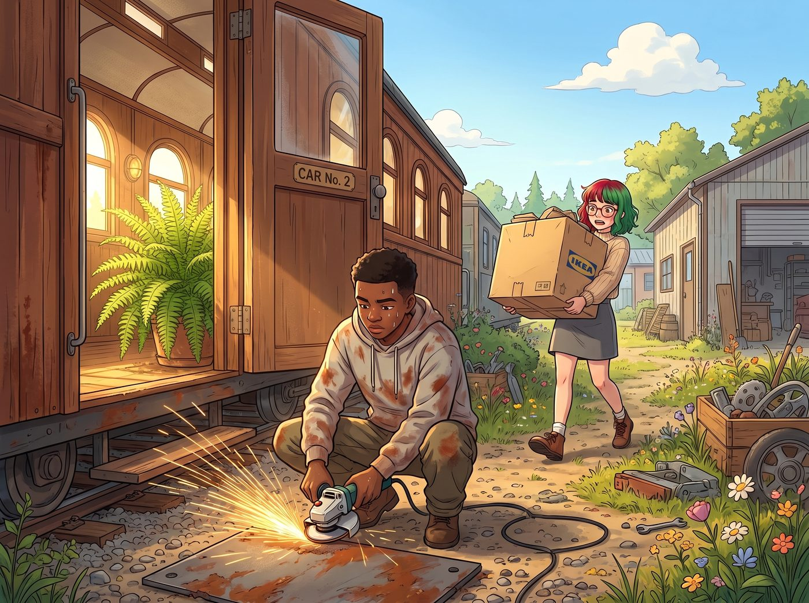

工具牆的行政洗禮（倒敘）

波特蘭的週末，青年機械教室的二號車廂門戶大開，陽光將門口的波士頓腎蕨照得生機盎然。
自從 Miles 也考上了波特蘭社區學院之後，他大部分時間都待在校區裡上課，只有週末才會回到工坊，繼續跟著 Chloe 打下手、學點真本事。今天正好是這樣一個難得的週末。
Miles 穿著一件沾了幾點防銹底漆的衛衣，正蹲在車廂外的空地上，專心地用角磨機給一塊廢棄鋼板除銹，準備用來做新的教學模具。
這時，一個穿著米色針織衫、戴著圓框眼鏡的年輕女孩，手裡抱著一個標著「IKEA」的巨大紙箱，吃力地走進了鐵道花園。
一、露天作業的合規疑慮
十八歲的 Lily 剛剛在波特蘭市區完成了一次大採購。她按照那張精確到分鐘的週末採購物資清單，買齊了所有的分類收納盒和標籤機耗材，準備將她那個充滿強迫症的宿舍收納系統，強行推廣到這座由 Chloe 主導的混亂工坊裡。
「請問……」Lily 站在二號車廂門口，推了推因為出汗而滑落的眼鏡，看著滿地飛濺的火星和金屬碎屑，眉頭立刻皺了起來，「Chloe 學姐在嗎？另外，根據職業安全與健康標準，您目前的除銹作業沒有設置隔離擋板，飛濺的金屬微粒可能會對三公尺內的行人造成呼吸道危害。」
角磨機的聲音戛然而止。
Miles 摘下防塵面罩，愣愣地看著這個突然出現、一本正經背誦安全法規的女孩。他在街頭見過各種各樣的人，也見過 Chloe 這種狂野的暴力技工，但他從來沒見過有人會對著一個除銹的學徒，嚴肅地討論隔離擋板。
「呃……抱歉。」Miles 趕緊放下角磨機，拍了拍身上的灰塵，「Chloe 姐去五金店買氬弧焊的氣瓶了。我是 Miles，這裡的助教。妳是……？」
「我是 Lily，PNCA 的大一新生。」Lily 規矩地鞠了個躬，然後將那個巨大的紙箱放在地上，「我是來幫工坊進行物資分類與合規化建檔的。」
Miles 眨了眨眼，看著紙箱裡那一堆花花綠綠的收納盒和標籤紙，突然有種不祥的預感。
二、慘無人道的行政洗禮
半個小時後，當 Chloe 扛著氣瓶回到工坊時，她看到了讓她目瞪口呆的一幕。
她引以為傲的、那面充滿了街頭隨性美學的冷軋鋼工具牆，此刻正經歷著一場慘無人道的行政洗禮。
Lily 站在一把小折疊梯上，正用一台標籤機，給每一把扳手、每一把管鉗，甚至每一顆螺絲釘，貼上帶有二維碼和編號的標籤。而身強體壯的 Miles，則被 Lily 指揮得像個陀螺一樣，在各個工具箱之間來回奔波。
「Miles 前輩，請將這把十四毫米的開口扳手歸類到B-3號收納區，並在系統中登記其磨損狀態。」Lily 軟糯的聲音裡透著一種不容置疑的秩序感，「還有，我發現您剛才將八號螺栓和十號螺栓混放在了同一個抽屜裡。這在工業生產中會導致零點五百分比的裝配錯誤率，請立刻進行人工分揀。」
「好的……馬上分揀。」Miles 滿頭大汗，手裡拿著一堆螺絲，欲哭無淚。他想起了之前 Victoria 坐在藤椅上，用綠色激光筆指揮他把螺栓放進右側第三個抽屜時的情景。當時他覺得 Victoria 的動線規劃很流暢；但現在，面對 Lily 這個將收納精確到二維碼的合規魔王，Miles 覺得自己彷彿被困在了一個巨大的試算表裡，連呼吸都要遵守單雙號。
三、老娘的扳手
「喂喂喂！大一新生！妳在對老娘的工具牆幹什麼？！」Chloe 扔下氣瓶，衝了過去，「那是我的扳手！妳把它們貼得像超市裡的打折衛生紙一樣是想怎樣？！」
Lily 從梯子上轉過頭，無辜地推了推眼鏡。
「Chloe 學姐，這叫固定資產的數位化生命週期管理。我發現您之前的工具擺放完全基於隨機直覺，這會導致每次尋找特定工具時浪費平均十二點五秒的時間。經過我的重新編碼，工坊的工具調用效率將提升百分之四百。」
「我不需要百分之四百的效率！我需要的是那種隨手一摸就能拿到扳手的狂野手感！」Chloe 抓狂地揉著藍色碎髮。
她轉頭看向一旁滿臉生無可戀的 Miles：「小子！你不是連街頭混混都不怕嗎？你那位神級特工大叔不是能單手解決麻煩嗎？你怎麼被這個十八歲的書呆子給治住了？！」
四、只能乖乖分揀螺絲
Miles 苦笑了一聲，無奈地攤開手：「Chloe 姐……McCall 先生教過我，當別人拿著水果刀的時候，你可以用拳頭解決；但當別人拿著法規條文和標籤機的時候……你只能乖乖分揀螺絲。」
看著被徹底行政化的工具牆，以及那個已經完全淪為 Lily 打工仔的重工業戰神 Miles，Chloe 仰天長嘆。
她突然意識到，二號車廂裡最可怕的武器，從來不是角磨機或者等離子切割機；而是那個穿著米色針織衫、隨時能用合規和報表把你按在地上摩擦的乖乖牌學妹。